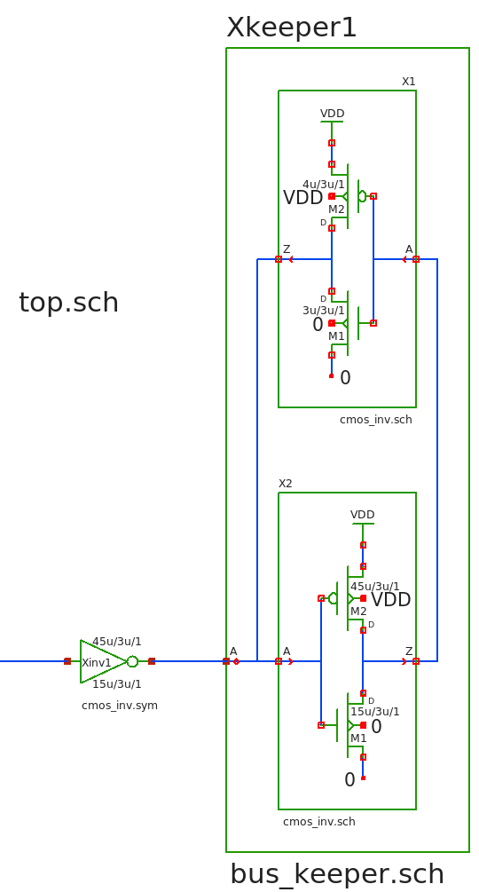
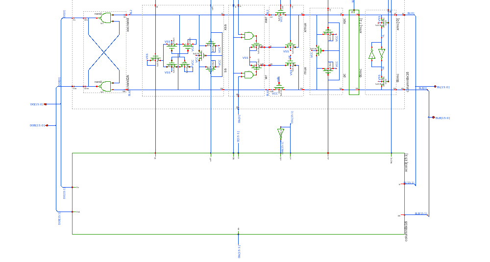

PREV
UP
NEXT
LOCAL CUSTOM CELLS: SCHEMATIC USED AS COMPONENT INSTANCE
- It is possible to place a schematic instead of a symbol into a parent schematic
- Example on the right shows one instance of a bus keeper that itself instantiates 2 parametric
inverters, all using the schematic views.
- Of course as with symbols it is possible to have parametric schematics, as an example the sizing
of the feedback inverter is different from the forward inverter. This is all done with instance attributes.

